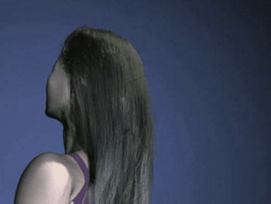
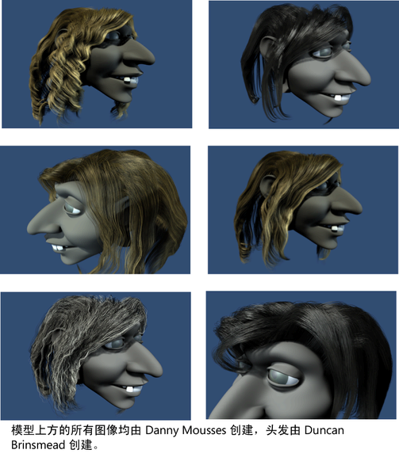

通过 nHair，您可以模拟以下内容：
- 长头发的自然移动和碰撞
- 在风中飘动的头发或被风吹烘干的头发
- 在水下游泳时的头发
- 各种发型，包括马尾辫、编辫和高髻
- 头发和角色衣服之间的碰撞
- 其他动力学曲线效果，如绳索、链条、电缆、线、吊桥、海洋生物，甚至曲线的放样曲面。详细信息请参见通过头发创建其他模型和效果。

若要快速开始使用 Maya nHair，Maya 中提供了教程。“nHair 快速入门”教程是
Maya 教程中的众多综合教程之一。
nHair 和 Nucleus
nHair 使用 Maya® Nucleus™，即生成 nCloth 和 nParticle 模拟的相同的动态模拟框架。nHair 系统与其他 Nucleus 对象交互，包括 nCloth、被动碰撞和 nParticle 对象。若要发生碰撞，则所有参与对象均必须指定给同一个 Nucleus 解算器（Nucleus 节点）。属于 nHair 系统的动力学曲线能够自碰撞。作为 Nucleus 对象，nHair 支持 nConstraint 并响应 Nucleus 解算器生成的内力。
nHair 连接
头发系统是头发毛囊的集合。NURBS 或多边形曲面在同一曲面上可以有多个头发系统，一个头发系统可以跨多个曲面。
人类头发的头发毛囊通常承载一根头发，而在 Maya 中每个头发毛囊承载一个头发曲线。头发毛囊控制与特定发束相关的属性和曲线以及头发附加到 NURBS 或多边形曲面的方式。到每个毛囊的输入是 NURBS 曲线、曲面和 UV 位置要附加到的“开始位置”(Start Position)。
创建头发时，头发系统输出可以是“NURBS 曲线”(NURBS curves)或 Maya ®Paint Effects™ 笔划的形式，或同时为这两种形式。如果在创建头发时指定输出为“NURBS”曲线，则每个毛囊将包含一个 NURBS 曲线，表示头发在该毛囊中的位置。如果指定输出是“Paint Effects”，则每个毛囊包含一个由“Paint Effects”笔划组成的发束。
头发系统中具有多种属性，用于整体上修改头发的外观和行为。还有毛囊级别的属性，这些属性将覆盖头发系统属性；可见的结果将同时受到毛囊和和头发系统属性的影响。
nHair 模拟由指定的 Nucleus 节点解算。默认情况下，头发会与指定给同一解算器的其他 Nucleus 对象交互。这些交互包括对象之间的碰撞和约束。请参见 nDynamics 简介。
nHair 输出
如果您需要执行以下操作，请考虑将 nHair 输出到“Paint Effects”：
- 通过“Maya 软件”(Maya Software)渲染器进行渲染
- 将“Paint Effects”头发转化为多边形并在任意渲染器中渲染
如果您需要执行以下操作，请考虑将 nHair 输出到“NURBS 曲线”(NURBS curves)：
- 使用曲线以便输出到直接支持曲线渲染的其他渲染器。
- 选择几个“当前位置”(Current Position)的曲线并通过构建历史放样穿过这些曲线的曲面。
- 向曲线下方挤出圆形以创建管状体。
- 使用作为路径的曲线或控制任何标准“Paint Effects”笔刷的曲线，例如羽毛或葡萄藤。这些笔刷的工作方式不同于默认的内置“Paint Effects”，因为曲线不是毛发，而是进行插值和影响“Paint Effects”的控件。该场景更新较慢，需要花费一些时间进行设置。或者，您也可以只将“Paint Effe ts”笔刷指定给头发系统（不需要对此使用“NURBS 曲线”(NURBS Curves)输出）。
如果您需要执行以下操作，请考虑将头发同时输出到“NURBS 曲线”(NURBS curves)和“Paint Effects”：
- 使用两条曲线（例如，作为粒子发射器以模拟水滴喷出的湿头发），并直接使用集成的“Paint Effects”进行渲染或通过转化为多边形来进行渲染。
渲染 nHair
可以使用“Maya 软件”(Maya Software)渲染器渲染“Paint Effects”头发。还可以将“Paint Effects”头发转化为多边形并在第三方渲染器中渲染。或者，可以仅将动态的“NURBS 曲线”(NURBS curves)输出为外部渲染器，如 Pixar® RenderMan®。
